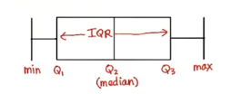

Statistic
Table of Contents
1 Central tendency
- mode
- median
- even \(\frac{x_\frac{n}{2} + x_{\frac{n}{2}+1}}{2}\)
- odd \(x_\frac{n+1}{2}\)
- mean
$$\mu = \frac{\sum_{i=1}^{N}x_i}{N}$$ or $$\mu = \sum_{i=1}^{N}p_i\cdot x_i$$
2 Variability
- range
cut off the upper 25% and lower 25% tails of the distribution
- IQR(Interquartile Range)
$$Q_3 - Q_1$$ \(Q_1\) is the midean of the first half

- Outlier
whiskers = 1.5 $$< Q_1 - whiskers\cdot(IQR)$$ $$> Q_3 + whiskers\cdot(IQR)$$
- MAD
mean absolute deviation
- Variance
$$\sigma^2 = \frac{\sum_{i=1}^N(x_i-\mu)^2}{N}$$ $$\sigma^2 = \frac{\sum_{i=1}^Nx_i^2}{N} - \mu^2$$ Bessel's Correction: a better estimate of population $$\sigma^2 = \frac{\sum_{i=1}^N(x_i-\mu)^2}{N-1}$$
- SD
standard deviation \(\sigma\)
approximately 68% lie within one SD of the mean
approximately 95% lie within two SD of the mean
calculate numbers of SD $$z=\frac{x-\mu}{\sigma}$$
3 Sampling Distribution
3.1 Central limit theorem
- The distribution of sample means is approximately normal
- The standard deviation of the sample(standard error) means \(\approx\frac{\sigma}{\sqrt{n}}\)
- The mean of the sample means \(\approx\mu\)
3.2 Confidence Interval
- Y% confidence interval:
$$(\bar{x}-z\frac{\sigma}{\sqrt{n}}, \bar{x}+z\frac{\sigma}{\sqrt{n}})$$
\(\pm{z}\) are the critical values of Y% confidence interval
- Margin of error \(z\frac{\sigma}{\sqrt{n}}\)
3.3 Terms
| z-score | number of standard deviation away from \(\mu\) |
| sampling distribution | distribution of sample means |
| standard error | the SD of the sampling distribution |
4 Hypothesis testing
- \(\alpha\) levels
Levels of likelihood: 5%, 1%, 0.1%.
If the probability of getting a particular sample mean is less than 5%,
it is unlikely to occur.
- critical region: the aera with the probability is less than particular \(\alpha\) level
- critical value: the z-score of the \(\alpha\) level
4.1 null hypothesis \(H_0\)
$$\mu\approx\mu_I$$
- type 1 error
Reject \(H_0\), but in the real world \(H_0\) is true.
We think our hypothesis is correct, but it is wrong.
- type 2 error
Retain \(H_0\), but in the real world \(H_0\) is false.
We think our hypothesis is wrong, but it is true.
4.2 alternative hypothesis \(H_A\)
$$\mu\neq\mu_I, \mu<\mu_I, \mu>\mu_I$$
5 T-Tests
5.1 DF(degree of freedom)
5.2 SEM(standard error of mean)
$$SEM=\frac{S}{\sqrt{n}}$$
5.3 t-score(one sample)
$$t=\frac{\bar{x}-\mu_0}{S/\sqrt{n}}$$
5.4 Cohen's d
standardized mean difference that measures the distance
between means in standardized units.
$$Cohen's d = \frac{\bar{x}-\mu_0}{S}$$
5.5 \(r_2\)
\(r_2\): coefficient of determination
\(r^2\) % of variation in one variable that is related to
('explained by') another variable.
$$r^2 = \frac{t^2}{t^2+DF}$$
5.6 Formula Wrapup
$$df=n-1$$ $$SE=\frac{S}{\sqrt{n}}$$ $$t=\frac{\bar{x}-\mu}{SE}$$ $$d=\frac{\bar{x}-\mu}{S}$$ $$CI=\bar{x}\pm{margin\ of\ error}$$ $$margin\ of\ error = t_{criticl}\cdot{SEM}$$ $$cohen's\ d = \frac{\bar{x}-\mu}{S}$$ $$r^2=\frac{t^2}{t^2+df}$$
6 Dependent t-test
$$t=\frac{\bar{x}_D-\mu_D}{S_D/\sqrt{n}}$$ $$CI=\bar{x}_D\pm t_{critical}\cdot\frac{S_D}{\sqrt{n}}$$ $$cohen's\ d=\frac{\bar{x}_D}{S_D}$$
6.1 Within-Subject designs
- Two conditions
- Pre-test, post-test
- Growth over time(longitudinal study)
6.2 Effect size
- difference measures: mean, standardized
cohen's d == standardized mean difference
6.3 Statistical significance
Statistical significance means:
- rejected the null
- results are not likely due to chance(sampling error)
6.4 Advantages
- Controls for individual differences
- Use fewer subject
- Cost-effective
- Less time-consuming
- Less expensive
6.5 Disadvantages
- Carry-over effects
Second measurement can be affected by first treatment
- Order may influence results
7 Independent t-test
7.1 Between-Subject designs
- Experimental
- Observational
7.2 DF: \(n_1+n_2-2\)
7.3 SE
$$S=\sqrt{S_{1}^2+S_{2}^2}$$
Assumes samples are approximately the same size, then $$SE=\sqrt{\frac{S_{1}^2}{n_1} + \frac{S_{2}^2}{n_2}}$$
7.3.1 Corrected Standard Error
$$SS=\sum_{i=1}^{n}(x_i-\bar{x})^2$$ $$S_{p}^2=\frac{SS_1 + SS_2}{df_1 + df_2}$$ $$SE=\sqrt{\frac{S_{p}^2}{n_1} + \frac{S_{p}^2}{n_2}}$$
cohen's d also uses \(S_p\)
7.4 t statistic
$$t=\frac{\bar{x}_D-\mu_D}{SE}$$
8 ANOVA
Analysis of variance
8.1 Grand mean \(\bar{x}_G\)
mean of all values
8.2 F-Ratio
- Between-group variability
The greater the distance between sample means, the more
likely population means will differ significantly.
- Within-group variability
The greater the variability of each individual sample,
the less likely population means will differ significantly.
$$F=\frac{MS_{between}}{MS_{within}}=\frac{SS_{between}/df_{between}}{SS_{within}/df_{within}} =\frac{\sum_{i}n_i(\bar{x}_i-\bar{x}_G)^2/(k-1)}{\sum_i\sum_j(x_{ij}-\bar{x}_i)^2/(N-k)}$$ $$SS_{total}=SS_{between}+SS_{within}=\sum_i\sum_j(x_{ij}-\bar{x}_G)$$ $$df_{total}=df_{between}+df_{within}=N-1$$
9 Report
9.1 Meaningfulness of Results
- What was measured?
- Effect size
- Can we rule out random chance?
- Can we rule out alternative explanations?(lurking variables)
9.2 descriptive statistics(Mean,SD,…)
report styles: text, graphs, tables
9.3 inferential statistics(\(\alpha\))
9.3.1 factors
- kind of test
- test statistic
- DF
- p-value
- direction of test(one/two tails)
9.3.2 inferential statistics
- confidence intervals
- confidence level e.g. 95%
- lower limit
- upper limit
- CI on what?
9.3.3 effect size measures
d, \(r^2\)
9.3.4 APA style
APA style is a whole guide on writing researh papers. $$t(df)=xxx, p=xx, direction$$ example: $$t(24)=-2.5, p=0.01, one-tailed$$
- CI
example:
Confidence interval on the mean difference;95%CI=(4,6)